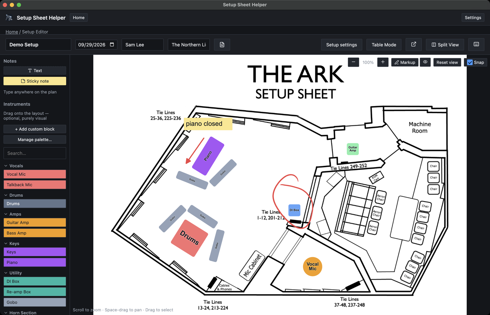
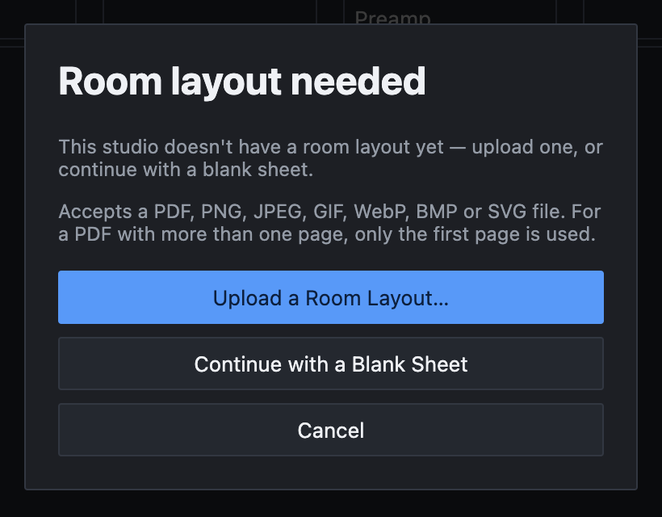
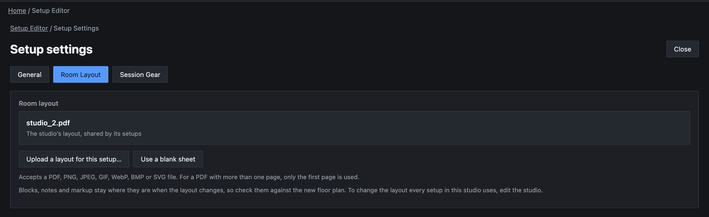
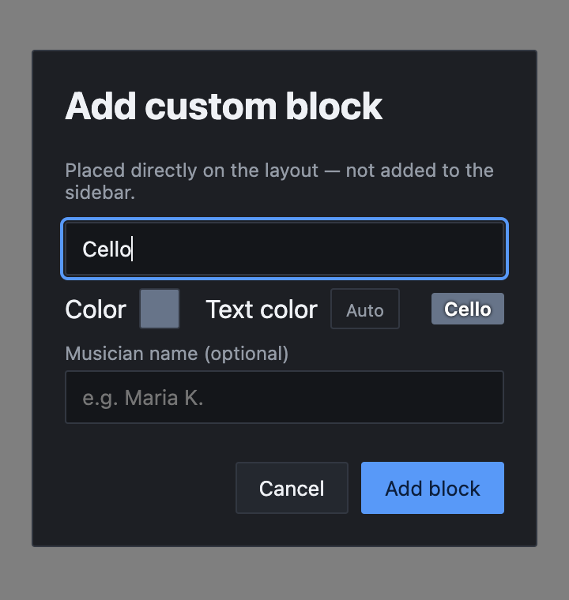
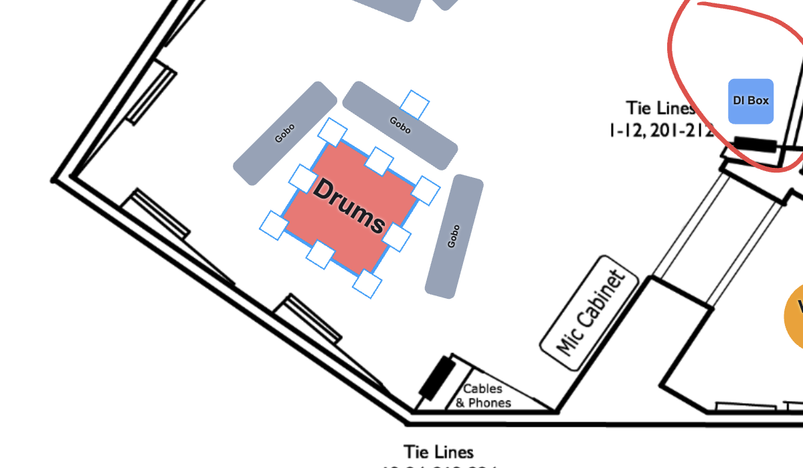
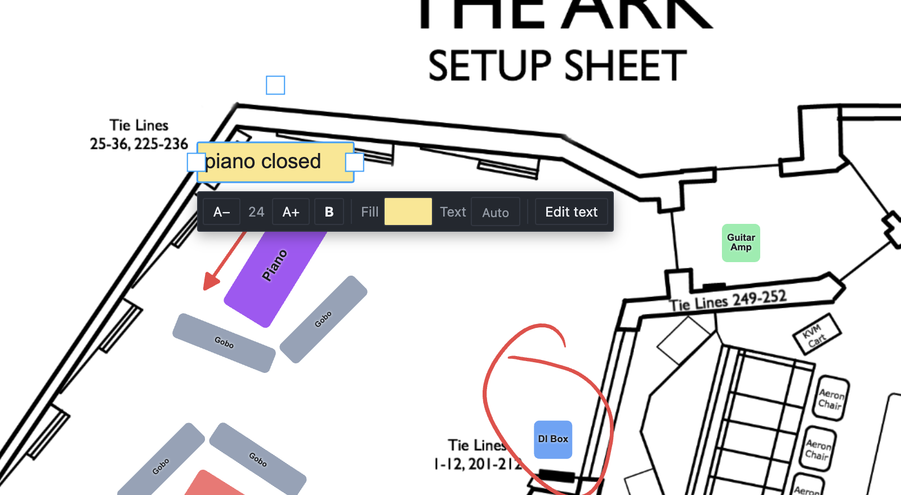

Part 4
The floor plan
Layout Mode puts the room's floor plan on screen. Drag instruments onto it, add notes, and the plan prints with the setup sheet so everyone knows where things go.

Opening Layout Mode
Click Layout Mode in the editor's toolbar, or press ⌘L. The button then reads Table Mode; click it (or press ⌘L again) to go back to the sheet.
When the room has no layout yet
If neither the studio nor the setup has a floor plan, the app asks for one first, in a dialog called Room layout needed.

- Upload a Room Layout… lets you pick a floor plan file.
- Continue with a Blank Sheet gives you a plain white page to work on.
- Cancel stays in Table Mode.
After you pick a file, the app asks where it belongs:
- Save to Studio makes it the studio's floor plan. Every setup in that studio uses it, including ones you make later.
- Just This Setup keeps it for this setup only. Use this for a one-off arrangement, such as a room that's been rebuilt for a week.
Back returns to the first question.
Which files work
A floor plan can be a PDF, PNG, JPEG, GIF, WebP, BMP or SVG file. For a PDF with more than one page, only the first page is used.
A PDF keeps its own page size. An image is scaled to fit a US Letter page: on its side (11 × 8.5 inches) for a wide or square image, upright for a tall one. A blank sheet is a Letter page on its side. This keeps blocks and notes a sensible size no matter how large or small the original image was.
Changing the room layout
To swap the floor plan later, click Setup settings (⌘G) and open the Room Layout tab. It shows which layout this setup uses: the studio's file, this setup's own file, a blank sheet, or No room layout yet.

The buttons you see depend on what the setup uses now:
- Upload a layout for this setup… gives this setup its own floor plan. Once it has one, the button reads Replace this setup’s layout….
- Use a blank sheet switches this setup to a blank page.
- Use the studio’s layout goes back to the studio's shared plan. It appears when this setup has its own layout and the studio has one too.
- Remove this setup’s layout appears instead when the studio has no layout of its own.
Blocks, notes and markup stay where they are when the layout changes, so check them against the new plan. To change the layout for every setup in a studio, edit the studio (see Setting up your studio).
Placing instruments
The palette on the left lists blocks by category: Vocals, Drums, Amps, Keys, Utility, Horn Section and String Section. Click a category's name to fold it away or open it again. Type in Search… to filter the list; matches show even inside folded categories.
-
Drag a block from the palette
As soon as you start dragging, the real block follows the pointer at its true size and the current zoom, so you can see exactly how big it will be.
-
Move it over the plan
Over the floor plan, the block stays inside the room and snaps into line with other blocks as you move (see Snapping). Hold ⌘ to place it freely.
-
Let go
The block lands exactly where the preview showed it, and it's selected so you can move or rotate it straight away. Press Esc before letting go to cancel the drag.
You can also right-click an empty spot on the plan and choose Add Instrument. That opens the custom block dialog (below), and the new block goes where you clicked.
Custom blocks
For anything the palette doesn't have, click + Add custom block. The dialog's description sums it up: Placed directly on the layout — not added to the sidebar.

- Title is the label on the block.
- Color and Text color set the fill and the label. The preview beside them shows the result.
- Musician name (optional) shows under the label, which is handy for a section of players.
Click Add block. A custom block is always a rectangle.
To add your own blocks to the palette, change their default colors, or make one a circle, click Manage palette…. It opens Settings → Layout Palette (see Settings reference). A block's shape comes from the palette and can't be changed once it's on the plan.
Selecting
- Click a block to select it. Click an empty part of the plan to deselect.
- ⌘-click adds a block to the selection, or takes it out.
- Drag across an empty area to draw a selection box. Anything it touches is selected.
- ⌘A selects everything on the plan. Esc clears the selection.
The hint line in the bottom-left corner of the plan tells you what's possible right now, such as how many items are selected.
⌘→ and ⌘← step through the blocks one at a time, in the order they were added, wrapping around at the end. Together with the arrow-key nudge below, you can arrange a plan without the mouse.
Moving, resizing and rotating
To move a block, drag it. It can't leave the room. For fine adjustments, press the arrow keys to nudge the selection 1 pixel, or hold ⇧ with an arrow key to move 10 pixels.
To resize or rotate, select the block and use its handles. The squares on the corners and sides resize it. The handle sticking out from the top edge rotates it, and the rotation snaps at every 45°.

A note has only left and right handles, because its height follows its text.
Moving a group
Select several items and drag any one of them; the whole selection moves with it. Each selected item keeps its own handles, and resizing or rotating one does the same to all of them.
Snapping
As you drag, a block lines up with the edges and centers of other items, and with the room's center lines. A magenta guide line shows what it has caught.
- Hold ⌘ while dragging to move freely for that one drag. The hint line reminds you while a drag is snapping.
- Untick Snap at the top right of the plan to turn snapping off until you tick it again. The app remembers your choice.
The Snap checkbox doesn't affect rotation, which always snaps at 45° steps.
There's a Toggle Snapping shortcut in Settings → Keybinds. It has no key until you give it one.
On a Mac with a Force Touch trackpad, you feel a light tap when a block snaps into line, when a rotation snaps, and when a pinch zoom passes 100% or reaches its limit. Turn this off with Trackpad haptics in Settings → Accessibility.
Editing, duplicating and deleting
Right-click a block for three choices:
- Edit opens the Edit block dialog, where you can change the title, color, text color and musician name. Click Save.
- Duplicate copies the selection, a little down and to the right, and selects the copies.
- Delete removes the block. If it's part of a selection, the whole selection goes.
Text color can be Auto, white, black or any swatch. Auto always picks a color you can read against the fill. If you choose one that's hard to read, a warning badge appears with its contrast ratio, such as 2.1:1. Long labels shrink to fit the block.
Shortcuts
- ⌘D duplicates the selection.
- ⌘⌫ deletes it. The forward-delete key (fn⌫ on a laptop) works on its own too.
After a delete, a message such as Deleted 2 blocks appears at the bottom of the window with an Undo button.
The newest item is always on top. There are no bring-forward or send-back controls, so to put one block over another, add the top one last (or duplicate it and delete the original).
Text and sticky notes
Notes are for anything a block can't say: "piano closed", a mic height, a reminder about a cable run. A Text note is words on the plan with no background. A Sticky note has a light yellow fill.
Adding a note
- Click Text or Sticky note at the top of the palette to put one in the middle of the view, or drag it onto the plan.
- Right-click an empty spot and choose Add text here. The note starts where you clicked.
- Press ⌘⇧T.
Start typing straight away. Return starts a new line. To finish, press Esc or ⌘Return, click Done, or click somewhere else. A note you leave empty is deleted.
To change a note's text later, double-click it, select it and press Return, or right-click it and choose Edit text.
The format bar
When one note is selected, a format bar appears under it.

- A− and A+ step through the text sizes 10, 12, 14, 18, 24 and 32. New notes start at 24.
- B turns bold on or off.
- Fill sets the background: None or a swatch. This is how a text note becomes a sticky note, and the other way round.
- Text sets the text color, with the same Auto option and contrast warning as blocks.
Zooming and panning
- Scroll to zoom in and out around the pointer, or pinch on a trackpad. A pinch pauses briefly at 100%.
- Buttons: − and + at the top right, with the current zoom between them. Reset view returns to 100%, where the whole plan fits.
- Keys: ⌘⇧= zooms in, ⌘⇧− zooms out, and ⌘⇧0 resets the view.
Zoom goes from 25% to 400%. To move around a zoomed-in plan, hold Space and drag. Scrolling always zooms rather than pans.
⌘= and ⌘− without ⇧ change the size of the whole app, not the plan. Settings reference covers interface size.
Undo
⌘Z undoes your last change on the plan, and ⌘⇧Z redoes it. Each drag, resize, rotation or edit is one step, and so is everything you type in one go in a note. The plan saves as you work, just like the sheet.
On a second screen
The pop-out button in the toolbar opens the floor plan in its own window, so the sheet and the plan can sit on separate displays. While it's open, the main window's Layout Mode button is turned off, and the pop-out button brings the window to the front instead. Working faster covers it in full.